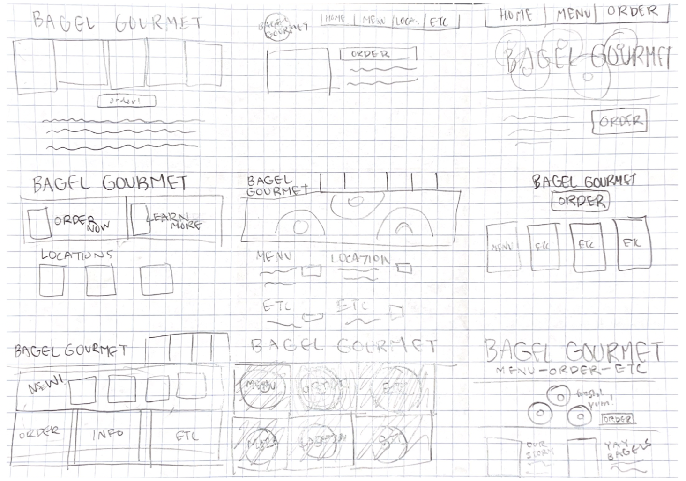
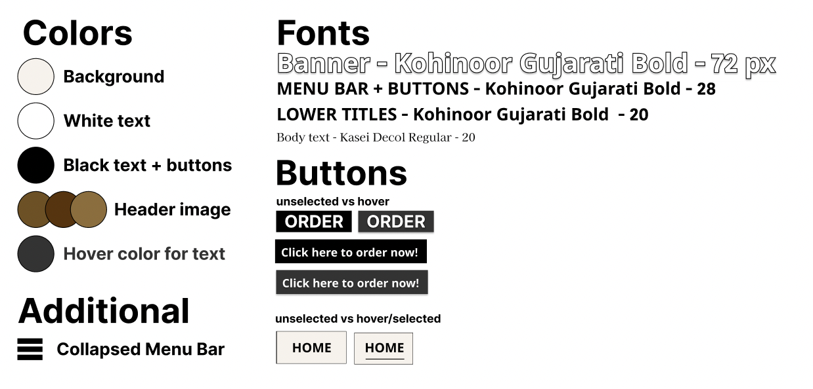
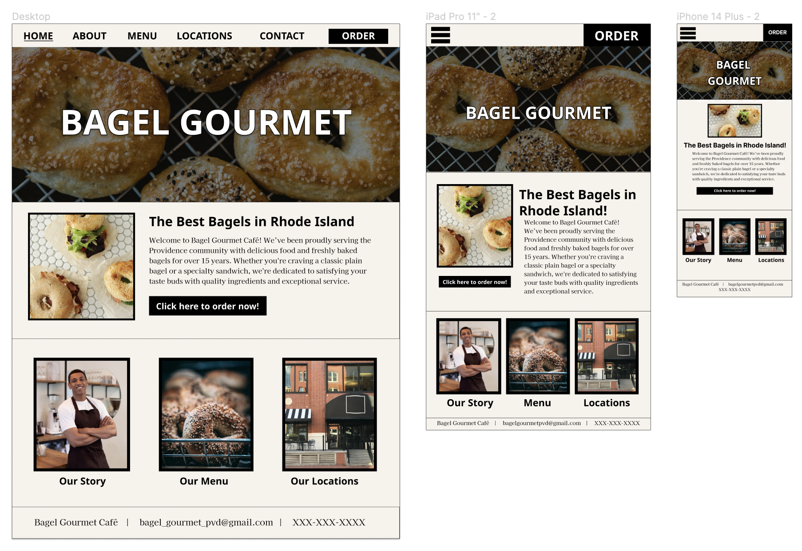
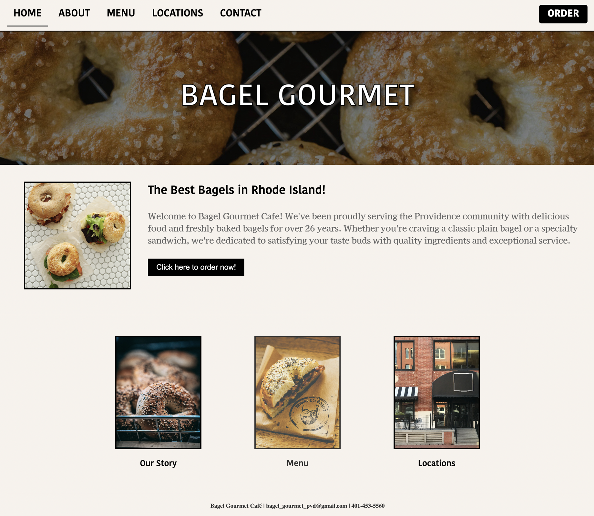
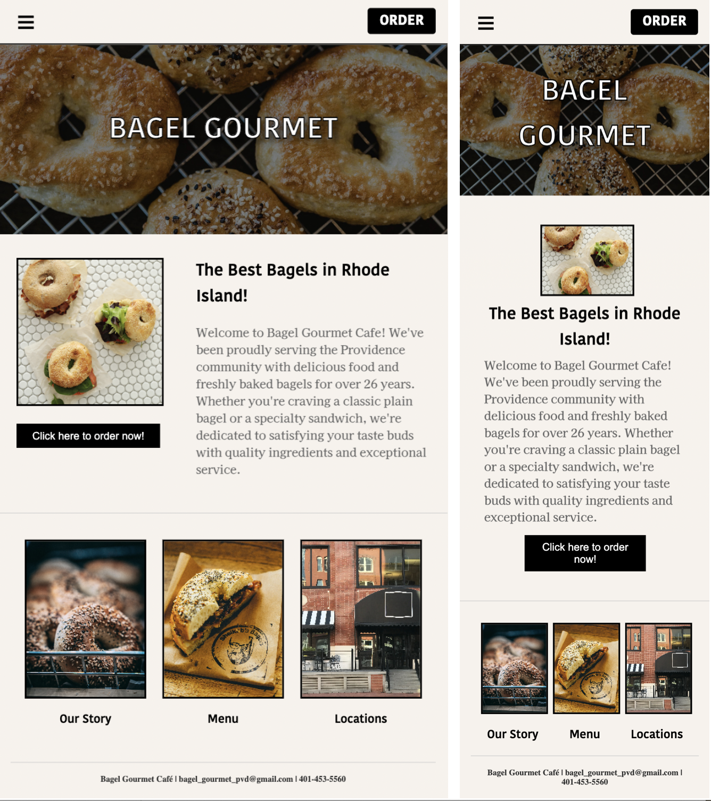

Our main objectives for this project were to analyze and identify
flaws in an existing interface, implement the design process in
creating improved prototypes, and build a responsive website. We were
additionally challenged to create our sites using only HTML and CSS.
The original site has since been
taken down.
My version can be found
here.
Part 1: Identifying Usability Problems

I chose to redesign the website for a local bagel shop – when I first
found it, I was shocked at how antiquated and disorganized it was. I
noticed the following in analyzing its usability:
- There was very inconsistent visual hierarchy (including text hierarchy) and sections were disorganized.
- Fonts and colors had no real patterns or logic to them.
- Elements moved around the page with almost zero consistency. The navigation bar shifted from top to side, the header disappeared and reappeared, and more.
- The page was not at all responsive, and elements were shrunk to an illegible size when browser size was changed.
- Finding practical information was extremely difficult. I was unable to find how to order or view a functional menu.
Part 2: Visual Redesign
With my notes on the existing site complete, it was time to begin the visual redesign process. I began with speed sketching, a series of nine one-minute sketches to generate ideas. Combining elements from various sketches, I integrated these into a final design sketch.
With a general idea of my design, I moved over to Figma, where I began with low-fidelity wireframing. I focused on improving the features I had originally noted as lacking in usability.
Using these wireframes as a base, I then created a style guide and a high-fidelity mockup that represented the polished version of what I wanted the site to look like for various screen sizes.
 Part 3: Responsive Redesign
Finally, it was time to code my site! This was easily the most complex visual interface I’ve attempted, so there was definitely a learning curve when it came to the more difficult flexbox or aesthetic components. Making the overview section responsive gave me a lot of trouble – I had four elements (the image, header, text, and button), and I struggled to switch around their placement to replicate my prototypes and ensure usability across all three screen sizes, and I had to get creative with my button elements to problem solve. The phone one still isn't my favorite, and I'd love to work some more on this site (especially implementing JS features) to make it more dynamic. However, after much effort, coding, and re-coding, I finally reached a site that I feel confident is much-improved from the original, and offers a far more usable and effective experience for users. In order, these are my site in computer, tablet, and phone dimensions.
 In testing for responsiveness and accessibility, alongside testing its appearance on various browser sizes and devices, I tried changing the font size on my browser and looking at WebAim WAVE for any accessibility issues. WebAIM showed no issues, and though the text size interferes with some of the aesthetics of formatting (again mostly in the intro section, which would greatly benefit from the use of JS elements), the site is still highly usable.
Part 4: Reflection
Overall, this projected offered a valuable learning experience in the practical implementation of the design process. This was my first time going through such a rigorous prototyping process, so I learned the value of planning and having a clear design vision, as it helped streamline the redesign process and ensure consistency across different stages. Additionally, through my struggle in implementing the flexboxes, I realized that taking a step back to ensure I truly understand the concepts I implement is far more rewarding than relying solely on trial and error. Finally, I better understand the comprehensiveness and complexity in creating an (even very simple) accessible, responsive website, and have greater appreciation for the value that that attention to detail and user-centric design principles bring to the development process. Though there's still room for improvement, I am proud of my final product and excited to continue working on effective design.